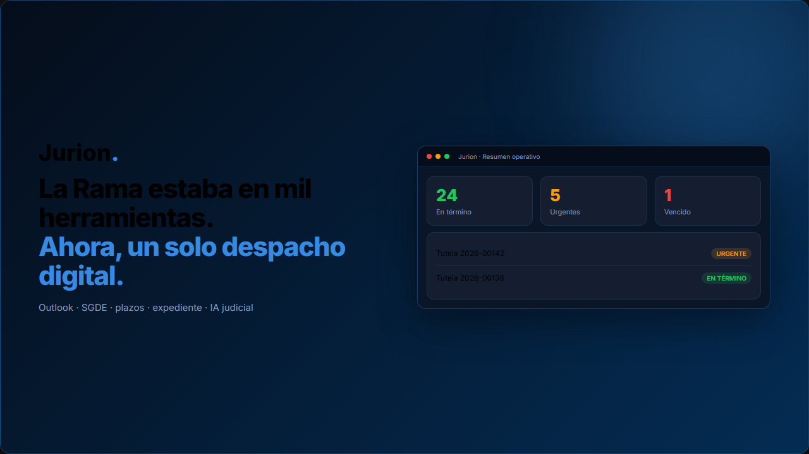
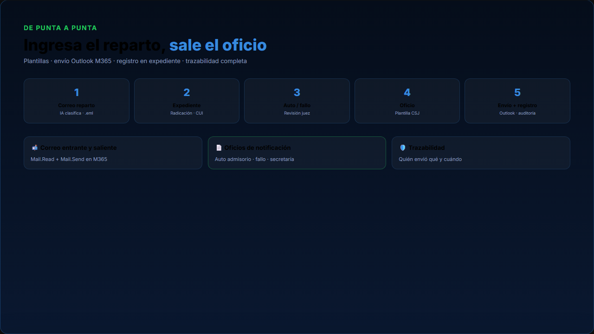
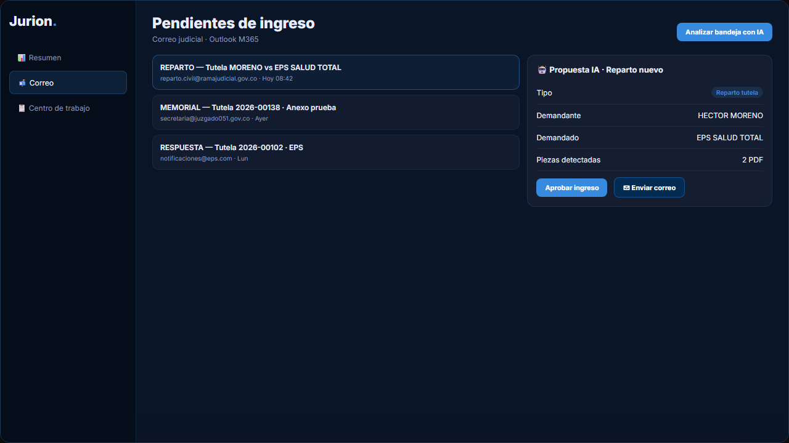
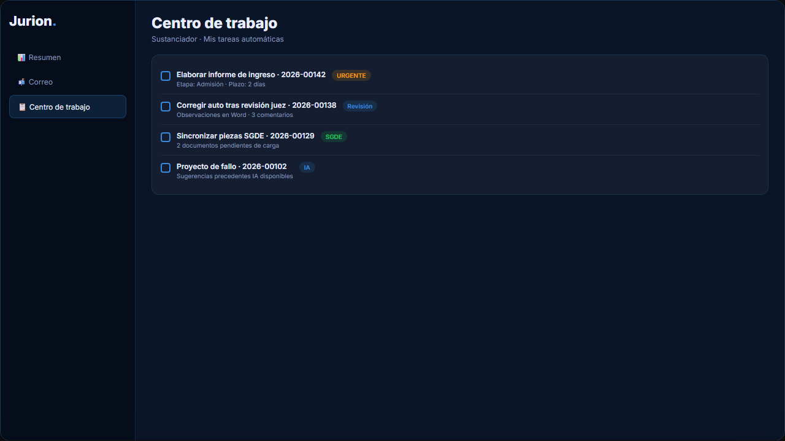

Prioridad 1
Trazabilidad y auditoría
Quién cambió qué y cuándo: actuaciones, piezas, envíos y revisiones Word.

Correo M365 · SGDE · oficios · plantillas CSJ · plazos · precedentes IA · estadística SIERJU.
De punta a punta: ingresa el reparto, sale el oficio — con trazabilidad.
Quién cambió qué y cuándo: actuaciones, piezas, envíos y revisiones Word.
Movimiento de Tutelas por periodo — sin rellenar Excel a mano.
Plantilla → envío Outlook → registro de notificación en el expediente.



Hecho con quienes viven el despacho cada día · Conforme Decreto 2591/91 · © 2026 Jurion